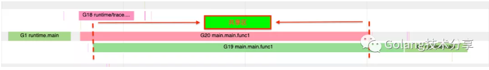
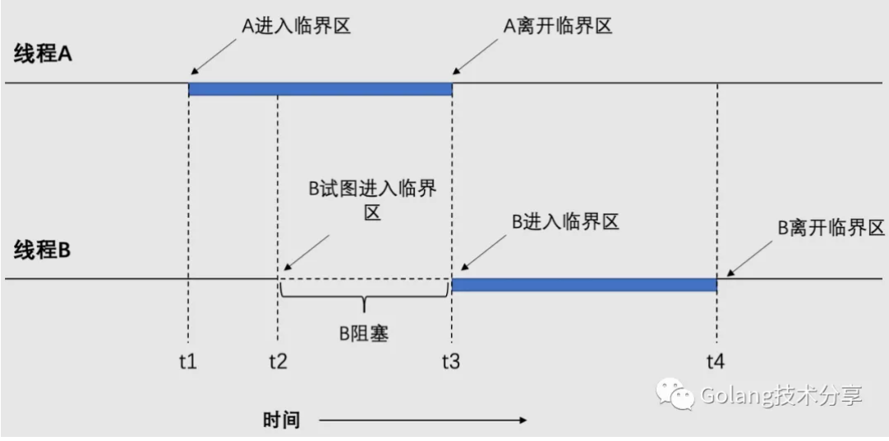
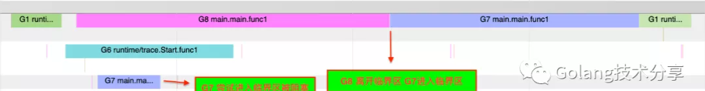
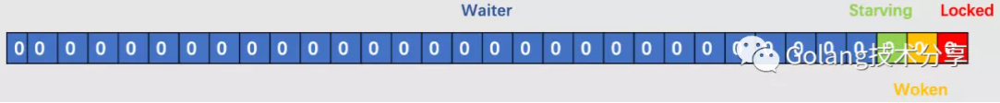
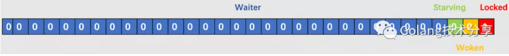
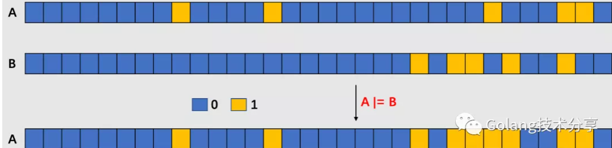
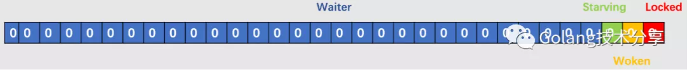
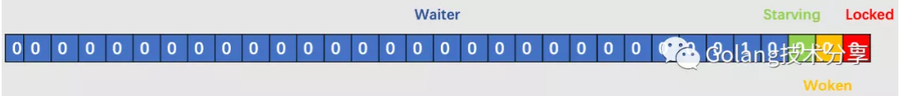

Some people, when confronted with a problem, think, “I know, I’ll use threads,” and then two they hav erpoblesms.\
1. 竞争条件
多线程程序在多核CPU机器上访问共享资源时，难免会遇到问题。我们可以来看一个例子
1 | 1var Cnt int |
很明显，程序的预期结果是200000，但实际的输出却是不可确定的，可能为100910、101364或者其他数值，这就是典型的多线程访问冲突问题。

利用go tool trace分析工具（需要在代码中加入runtime/trace包获取程序运行信息，此处省略），查看该程序运行期间goroutine的执行情况如上图所示。其中G20和G19就是执行Add()函数的两个goroutine，它们在执行期间并行地访问了共享变量Cnt。
类似这种情况，即两个或者多个线程读写某些共享数据，而最后的结果取决于程序运行的精确时序，这就是竞争条件（race condition）。
2. 临界区与互斥
怎样避免竞争条件？实际上凡涉及共享内存、共享文件以及共享任何资源的情况都会引发上文例子中类似的错误，要避免这种错误，关键是要找出某种途径来阻止多线程同时读写共享的数据。换言之，我们需要的是互斥（mutual exclusion），即以某种手段确保当一个线程在使用一个共享变量或文件时，其他线程不能做同样的操作。
我们把对共享内存进行访问的程序片段称作临界区（critical section），例如上例中的Cnt++片段。从抽象的角度看，我们希望的多线程行为如下图所示。线程A在t1时刻进入临界区，执行一段时间后，在t2时刻线程B试图进入临界区，但是这是不能被允许的，因为同一时刻只能运行一个线程在临界区内，而此时已经有一个线程在临界区内。我们通过某种互斥手段，将B暂时挂起直到线程A离开临界区，即t3时刻B进入临界区。最后，B执行完临界区代码后，离开临界区。

如果我们能够合理地安排，使得两个线程不可能同时处于临界区中，就能够避免竞争条件。因此，我们将代码稍作调整如下：
1 | 1var ( |
此时，程序执行得到了预期结果200000。

程序运行期间的执行情况如上图所示。其中G8和G7是执行Add()函数的两个goroutine，通过加入sync.Mutex互斥锁，G8和G7就不再存在竞争条件。
需要明确的是，只有在多核机器上才会发生竞争条件，只有多线程对共享资源做了写操作时才有可能发生竞态问题，只要资源没有发生变化，多个线程读取相同的资源就是安全的。
3. Go互斥锁设计
互斥锁是实现互斥功能的常见实现，Go中的互斥锁即sync.Mutex。本文将基于Go 1.15.2版本，对互斥锁的实现深入研究。
1 | 1type Mutex struct { |
state字段表示当前互斥锁的状态信息，它是int32类型，其低三位的二进制位均有相应的状态含义。
mutexLocked是state中的低1位，用二进制表示为0001（为了方便，这里只描述后4位），它代表该互斥锁是否被加锁。mutexWoken是低2位，用二进制表示为0010，它代表互斥锁上是否有被唤醒的goroutine。mutexStarving是低3位，用二进制表示为0100，它代表当前互斥锁是否处于饥饿模式。state剩下的29位用于统计在互斥锁上的等待队列中goroutine数目（waiter）。
默认的state字段（无锁状态）如下图所示。

sema字段是信号量，用于控制goroutine的阻塞与唤醒，下文中会有介绍到。
3.1 两种模式
Go实现的互斥锁有两种模式，分别是正常模式和饥饿模式。
在正常模式下，waiter按照先进先出（FIFO）的方式获取锁，但是一个刚被唤醒的waiter与新到达的goroutine竞争锁时，大概率是干不过的。新来的goroutine有一个优势：它已经在CPU上运行，并且有可能不止一个新来的，因此waiter极有可能失败。在这种情况下，waiter还需要在等待队列中排队。为了避免waiter长时间抢不到锁，当waiter超过 1ms 没有获取到锁，它就会将当前互斥锁切换到饥饿模式，防止等待队列中的waiter被饿死。
在饥饿模式下，锁的所有权直接从解锁（unlocking）的goroutine转移到等待队列中的队头waiter。新来的goroutine不会尝试去获取锁，也不会自旋。它们将在等待队列的队尾排队。
如果某waiter获取到了锁，并且满足以下两个条件之一，它就会将锁从饥饿模式切换回正常模式。
- 它是等待队列的最后一个goroutine
- 它等待获取锁的时间小于1ms
饥饿模式是在 Go 1.9版本引入的，它防止了队列尾部waiter一直无法获取锁的问题。与饥饿模式相比，正常模式下的互斥锁性能更好。因为相较于将锁的所有权明确赋予给唤醒的waiter，直接竞争锁能降低整体goroutine获取锁的延时开销。
3.2 加锁
既然被称作锁，那就存在加锁和解锁的操作。sync.Mutex的加锁Lock()代码如下
1 | 1func (m *Mutex) Lock() { |
代码非常简洁，首先通过CAS判断当前锁的状态（CAS的原理和实现可以参照小菜刀写的《同步原语的基石》一文）。如果锁是完全空闲的，即m.state为0，则对其加锁，将m.state的值赋为1，此时加锁后的state如下

如果，当前锁已经被其他goroutine加锁，则进入m.lockSlow()逻辑。lockSlow函数比较长，这里我们分段阐述。
3.2.1 初始化
1 | 1func (m *Mutex) lockSlow() { |
第一段程序是做一些初始化状态、标志的动作。
3.2.2 自旋
lockSlow函数余下的代码，就是一个大的for循环，首先看自旋部分。
1 | 1for { |
关于自旋，这里需要简单阐述一下。自旋是自旋锁的行为，它通过忙等待，让线程在某段时间内一直保持执行，从而避免线程上下文的调度开销。自旋锁对于线程只会阻塞很短时间的场景是非常合适的。很显然，单核CPU是不适合使用自旋锁的，因为，在同一时间只有一个线程是处于运行状态，假设运行线程A发现无法获取锁，只能等待解锁，但因为A自身不挂起，所以那个持有锁的线程B没有办法进入运行状态，只能等到操作系统分给A的时间片用完，才能有机会被调度。这种情况下使用自旋锁的代价很高。
在本场景中，之所以想让当前goroutine进入自旋行为的依据是，我们乐观地认为：当前正在持有锁的goroutine能在较短的时间内归还锁。
runtime_canSpin()函数的实现如下
1 | 1//go:linkname sync_runtime_canSpin sync.runtime_canSpin |
由于自旋本身是空转CPU的，所以如果使用不当，反倒会降低程序运行性能。结合函数中的判断逻辑，这里总结出来goroutine能进入自旋的条件如下
- 当前互斥锁处于正常模式
- 当前运行的机器是多核CPU，且GOMAXPROCS>1
- 至少存在一个其他正在运行的处理器P，并且它的本地运行队列（local runq）为空
- 当前goroutine进行自旋的次数小于4
前面说到，自旋行为就是让当前goroutine并不挂起，占用cpu资源。我们看一下runtime_doSpin()的实现。
1 | 1//go:linkname sync_runtime_doSpin sync.runtime_doSpin |
runtime_doSpin调用了procyield，其实现如下（以amd64为例）
1 | 1TEXT runtime·procyield(SB),NOSPLIT,$0-0 |
很明显，所谓的忙等待就是执行 30 次 PAUSE 指令，通过该指令占用 CPU 并消耗 CPU 时间。
3.2.3 计算期望状态
前面说过，当前goroutine进入自旋是需要满足相应条件的。如果不满足自旋条件，则进入以下逻辑。
1 | 1 // old是锁当前的状态，new是期望的状态，以期于在后面的CAS操作中更改锁的状态 |
这里需要重点理解一下位操作A |= B，它的含义就是在B的二进制位为1的位，将A对应的二进制位设为1，如下图所示。因此，new |= mutexLocked的作用就是将new的最低一位设置为1。

3.2.4 更新期望状态
在上一步，我们得到了锁的期望状态，接下来通过CAS将锁的状态进行更新。
1 | 1 // 尝试将锁的状态更新为期望状态 |
这里需要理解一下runtime_SemacquireMutex(s *uint32, lifo bool, skipframes int) 函数，它是用于同步库的sleep原语，它的实现是位于src/runtime/sema.go中的semacquire1函数，与它类似的还有runtime_Semacquire(s *uint32) 函数。两个睡眠原语需要等到 *s>0 （本场景中 m.sema>0 ），然后原子递减 *s。SemacquireMutex用于分析竞争的互斥对象，如果lifo（本场景中queueLifo）为true，则将等待者排在等待队列的队头。skipframes是从SemacquireMutex的调用方开始计数，表示在跟踪期间要忽略的帧数。
所以，运行到 SemacquireMutex 就证明当前goroutine在前面的过程中获取锁失败了，就需要sleep原语来阻塞当前goroutine，并通过信号量来排队获取锁：如果是新来的goroutine，就需要放在队尾；如果是被唤醒的等待锁的goroutine，就放在队头。
3.3 解锁
前面说过，有加锁就必然有解锁。我们来看解锁的过程：
1 | 1func (m *Mutex) Unlock() { |
通过原子操作AddInt32想将锁的低1位Locked状态位置为0。然后判断新的m.state值，如果值为0，则代表当前锁已经完全空闲了，结束解锁，否则进入unlockSlow()逻辑。
这里需要注意的是，锁空闲有两种情况，第一种是完全空闲，它的状态就是锁的初始状态。

第二种空闲，是指的当前锁没被占有，但是会有等待拿锁的goroutine，只是还未被唤醒，例如以下状态的锁也是空闲的，它有两个等待拿锁的goroutine（未唤醒状态）。

以下是unlockSlow函数实现。
1 | 1func (m *Mutex) unlockSlow(new int32) { |
在这里，需要理解一下runtime_Semrelease(s *uint32, handoff bool, skipframes int)函数。它是用于同步库的wakeup原语，Semrelease原子增加*s值（本场景中m.sema），并通知阻塞在Semacquire中正在等待的goroutine。如果handoff为真，则将计数直接传递给队头waiter。skipframes是从Semrelease的调用方开始计数，表示在跟踪期间要忽略的帧数。

总结
从代码量而言，go中互斥锁的代码非常轻量简洁，通过巧妙的位运算，仅仅采用state一个字段就实现了四个字段的效果，非常之精彩。
但是，代码量少并不代表逻辑简单，相反，它很复杂。互斥锁的设计中包含了大量的位运算，并包括了两种不同锁模式、信号量、自旋以及调度等内容，读者要真正理解加解锁的过程并不容易，这里再做一个简单回顾总结。
在正常模式下，waiter按照先进先出的方式获取锁；在饥饿模式下，锁的所有权直接从解锁的goroutine转移到等待队列中的队头waiter。
模式切换
如果当前 goroutine 等待锁的时间超过了 1ms，互斥锁就会切换到饥饿模式。
如果当前 goroutine 是互斥锁最后一个waiter，或者等待的时间小于 1ms，互斥锁切换回正常模式。
加锁
- 如果锁是完全空闲状态，则通过CAS直接加锁。
- 如果锁处于正常模式，则会尝试自旋，通过持有CPU等待锁的释放。
- 如果当前goroutine不再满足自旋条件，则会计算锁的期望状态，并尝试更新锁状态。
- 在更新锁状态成功后，会判断当前goroutine是否能获取到锁，能获取锁则直接退出。
- 当前goroutine不能获取到锁时，则会由sleep原语
SemacquireMutex陷入睡眠，等待解锁的goroutine发出信号进行唤醒。 - 唤醒之后的goroutine发现锁处于饥饿模式，则能直接拿到锁，否则重置自旋迭代次数并标记唤醒位，重新进入步骤2中。
解锁
- 如果通过原子操作
AddInt32后，锁变为完全空闲状态，则直接解锁。 - 如果解锁一个没有上锁的锁，则直接抛出异常。
- 如果锁处于正常模式，且没有goroutine等待锁释放，或者锁被其他goroutine设置为了锁定状态、唤醒状态、饥饿模式中的任一种（非空闲状态），则会直接退出；否则，会通过wakeup原语
Semrelease唤醒waiter。 - 如果锁处于饥饿模式，会直接将锁的所有权交给等待队列队头waiter，唤醒的waiter会负责设置
Locked标志位。
另外，从Go的互斥锁带有自旋的设计而言，如果我们通过sync.Mutex只锁定执行耗时很低的关键代码，例如锁定某个变量的赋值，性能是非常不错的（因为等待锁的goroutine不用被挂起，持有锁的goroutine会很快释放锁）。所以，我们在使用互斥锁时，应该只锁定真正的临界区。
1 | 1mu.Lock() |
写如上的代码，是很爽。但是，你有想过这会带来没必要的性能损耗吗？